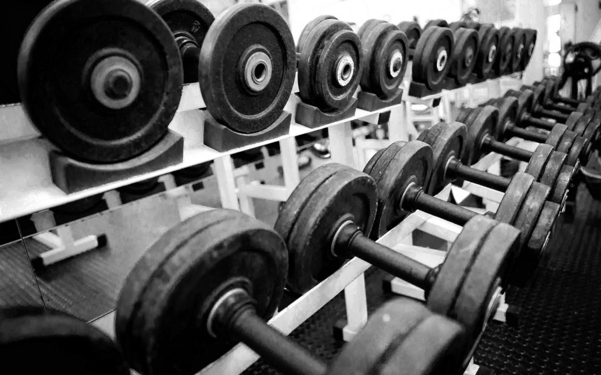
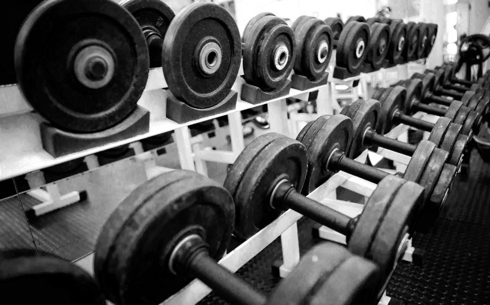

Hobbies
My hobbies include:
- Swimming
- Listening to podcasts and radio
- Going to the gym
 

Skills
I possess quite a number of skills, they are:
- Writing fluently in English
- Network well among students
- Paying attention to details
- Ability to proofread
Vision of my future
I wish to aspire to become a highly respected and experienced individual regardless of where my work area will be. I want to become that type of person so that I can assist and teach those with me very well and guide them. I'm also open to learn from my mistakes and will always continue to improve myself on a daily basis.
| School Experience | |
|---|---|
| Name of school / Institution | Year |
| St. James' School | 2004-2009 |
| SM PJN PG Abu Bakar | 2010-2014 |
| IBTE Sultan Saiful Rijal Campus | 2016-2018 |
| Politeknik Brunei | 2019-Present |
Personal Reflection on my achievements
I'm thankful for being able to continue my studies. I'm also grateful for my first semester because it taught me how to manage my time properly as well as prioritising which tasks is more vital so that I can get it done on time.
Now I am on my second semester in Politeknik Brunei with DLIC05, looking forward to learn more with my colleagues and my respected lecturers.